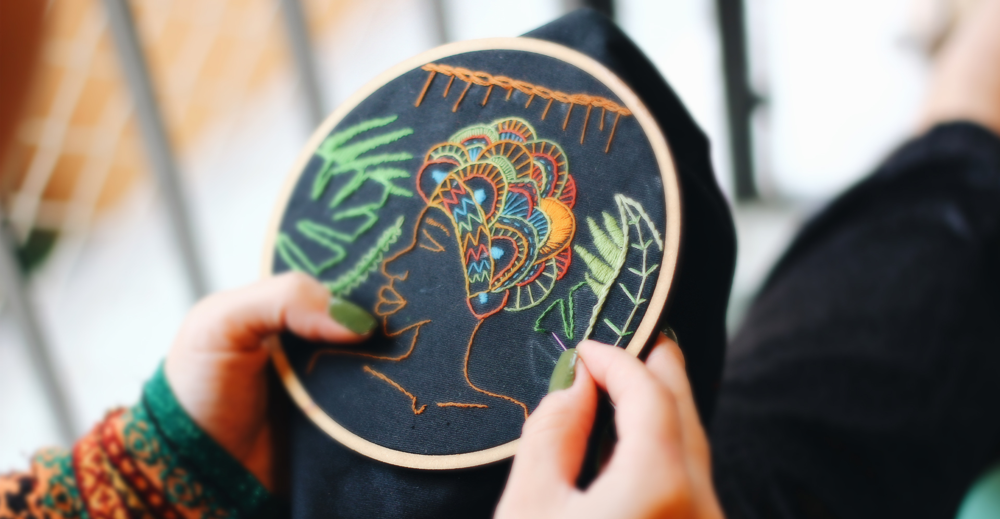
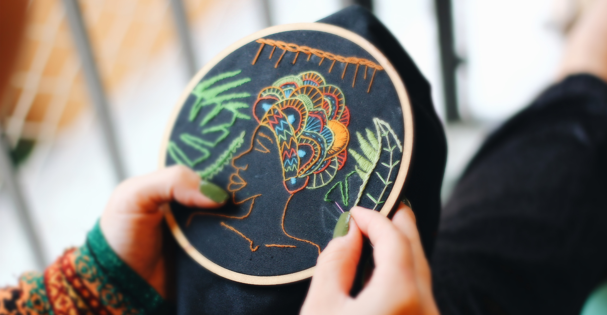

KalamKaari
Group Project: Arun Rajeev, Arunraj Damodaran, Nileet Jacob Philip, Vinuta Mestry
Group Project: Arun Rajeev, Arunraj Damodaran, Nileet Jacob Philip, Vinuta Mestry
The process of making a physical prototype started with sketching. The idea was to come up with a prototype for a wearable headgear that could emulate the Augmented reality UI that a user could interact with in real time. The conceptual sketch formed the primary basis for our prototyping process. The whole creative process was crucial in determining the direction the group took in making the first physical prototype(fig A). The idea was to translate the whole experience of wearing an Augmented reality/ Mixed reality headset to a physical low fidelity prototype that was wearable. Final Iteration The third iteration of the physical prototype drew from the shortcomings of the first and second design iterations. The physical design was considerably changed as well as the materials used to come up with the prototype. The prototype used a salvaged shoe box as the primary source material. It did away with the headband/hoop design and made use of a 90-degree part section of the cardboard shoebox. There is a cutout made to facilitate vision and a popup screen was hung in front of it with additional cardboard supports and an elastic band. The prototype has 2 elastic bands salvaged from face masks that act as supports when worn on the head. The entire design was fastened using stapler pins, the elastic bands act as tensioned supports and made the prototype sturdy. The popup screen in front has two loops behind to facilitate the use of OHP sheet screens. This in conjunction with the embroidery hoop works together as the prototype.
For providing a great learning experience for the user, effective communication between users and the system is very important. To make the communication more effective and human centered we tried to incorporate a mascot. Mascot is a personified image or a character, that a will symbolically represent the brand. We explored different options, like birds, animal figures and so on. We wanted a gender neutral and inclusive mascot, so it will be relevant to a wider audience and thus to include as many people as possible. We researched learning apps which effectively use a mascot to communicate with the users. We used ProCreate App on iPad to draw the mascot character.
We will use the Hololens app to augment the marker on the fabric. After the user wears the Hololens, they can either select the designs to be embroidered or select the next exercise. Hololens will then calibrate the environment to augment the designs on fabric. There will be green and red dots aulgmented on the fabric, which will correspond to the needle-in and needle-out positions.
After creating a basic sketch of the screens on paper, we decided to make the digital prototype in Figma due to their team collaboration features. Figma was our best bet. We created designs for iPad OS. For the screen-based interactions on iPad, we followed the Apple Human Interface Guidelines.